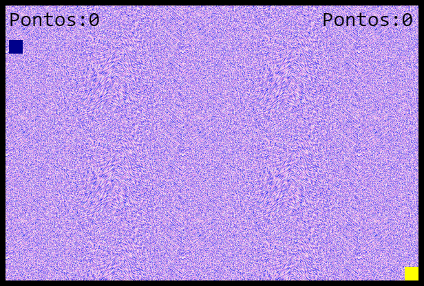

Kider é um jogo que explora reflexos rápidos (tanto nos olhos quanto nos dedos). Foi feito para jogar com alguém no mesmo computador, o que pode fazer com que altas risadas surjam, ou que uma amizade seja desfeita.
Não há um vencedor ou perdedor. Apenas um contador para registrar as vitórias de cada um. A jogabilidade simples permite que praticamente qualquer um jogue.
Os jogadores sempre aparecerão nos mesmos lugares, totalmente opostos, para que não haja o famoso "spawn-kill" dos jogos de tiro, quando o você mal nasce e já é morto.
